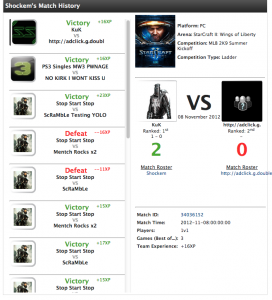

The Blog
Hack-a-thon 10! The coolest of the cool.
Here at Agora Games, we try to do semi-regular Hack-a-thons in the office. Over the last year, we've started trying to do them about once every 2-3 months. This seems to keep them fresh and fun, but still something that doesn't interfere with day to day work needs.
Hackathons have been around since the late 90s, so they've been around for awhile in the tech field. The idea of a hackathon, as it pertains to Agora, is to give our employees 24 hours to work on anything they want as long as it relates to our business in some way.
Our most recent hackathon took place this past week Thursday 8th - Friday 9th. It started at 4pm on Thursday with a nice kick-off meeting where everyone announced their projects or joined a team as a free agent (if they didn't have their own project). Everything ended on Friday at 4pm with the demo session. There were a lot of cool projects, but I wanted to point out some of the way cool ones that were showcased.
Gamebattles Match History - Kirk Becker
A portion of Agora developers make up the tech arm of Major League Gaming, and a couple of people worked on MLG specific projects. One of these projects focused on adding in a page that displays a user's individual Match History.
This is something that the users of MLG have been asking for, and since we like to please, Kirk is just about ready to release this to the world. In 24 hours, Kirk was able to get a working version of this up on our staging environment. Since this is such a cool product, work will be completed on this in the next couple days, and the users will love it.

Podium - David Czarnecki
David wanted to take this hackathon to explore the use of ProMotion and Formation iOS libraries for application development. Working with these two libraries, He wanted to move to a higher level from hand-writing the interactions in iOS development.
The work done by David is available for review in the following links below. Please note that the iOS coponent requires RubyMotion
Podium API - https://github.com/czarneckid/podium-api Podium iOS - https://github.com/czarneckid/podium-ios
https://github.com/clayallsopp/formotion https://github.com/clearsightstudio/ProMotion
Seraph - Brennan Frydl
Brennan made a mini web framework in the spirit of Rails, but running on em-synchrony. This uses tilt for templates, rack-mounts parser for routing, and doesn't make any assumptions about the data/ORM layer! Much like node.js, it handles situations where requests need significant amounts of time. Rather than using CPU, it'll make calls to external web services.
Basic configuration was complete within the 24 hour timeframe, and a nice demo was given which showed the performance improvements when compared to Rails. After looking at the product for another day, it appears as though this is going to be re-written and possibly used in the future here at Agora! Nice!
Notification Bar - Jack Letourneau
Jack created a basic UI for defining time-based notifications using a zoomable/scrollable timeline widget and a WYSIWYG content editor. There was also the creation of a jQuery based widget for popping up notifications onto the top edge of the browser window.
This is something that we've been thinking about doing for our Hydra mobile product, so it was awesome that this was something that got worked on during a hackathon. Development for this item has also continued since the hackathon, which is a beautiful thing.
In all, this was a really successful hackathon for Agora Games. A couple of the projects that were worked on by our engineers are actually going to be utilized in future products across both Major League Gaming and Agora Games. I call that a success!